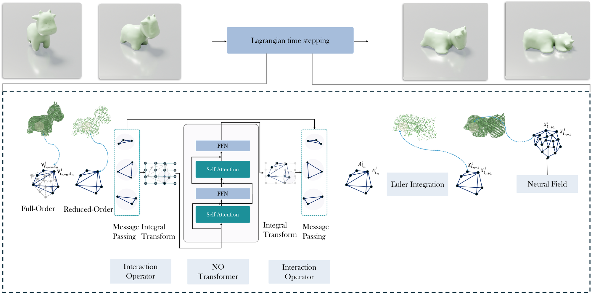
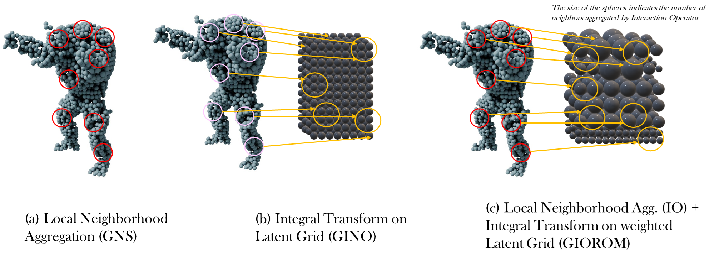
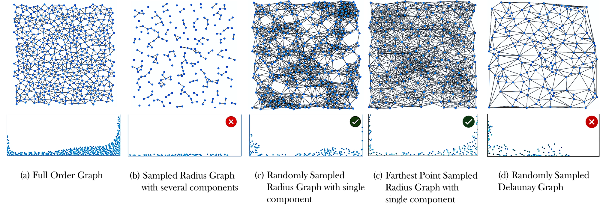
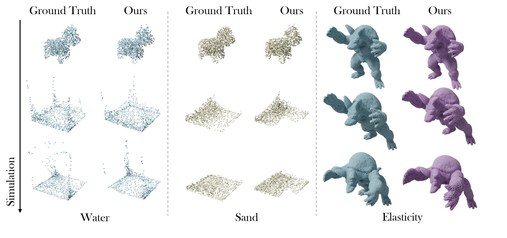
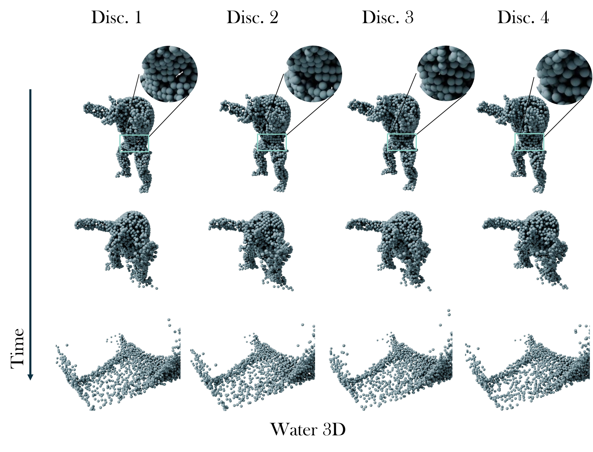

GIOROM
Abstract
Simulating physical systems governed by Lagrangian dynamics often entails solving partial differential equations (PDEs) over high-resolution spatial domains, leading to significant computational expense. Reduced-order modeling (ROM) mitigates this cost by evolving low-dimensional latent representations of the underlying system. While neural ROMs enable querying solutions from latent states at arbitrary spatial points, their latent states typically represent the global domain and struggle to capture localized, highly dynamic behaviors such as fluids. We propose a sampling-based reduction framework that evolves Lagrangian systems directly in physical space, over the particles themselves, reducing the number of active degrees of freedom via data-driven neural PDE operators. To enable querying at arbitrary spatial locations, we introduce a learnable kernel parameterization that uses local spatial information from time-evolved sample particles to infer the underlying solution manifold. Empirically, our approach achieves a 6.6–32× reduction in input dimensionality while maintaining high-fidelity evaluations across diverse Lagrangian regimes, including fluid flows, granular media, and elastoplastic dynamics. We refer to this framework as GIOROM (Geometry-InfOrmed Reduced-Order Modeling).
Method



Results
Simulations across materials and regimes.
3D simulations

Discretization invariance

Citation
@article{viswanath2026learning,
title = {Learning Lagrangian Interaction Dynamics with Sampling-Based Model Order Reduction},
author = {Hrishikesh Viswanath and Yue Chang and Aleksey Panas and Julius Berner and Peter Yichen Chen and Aniket Bera},
journal = {Transactions on Machine Learning Research},
issn = {2835-8856},
year = {2026},
url = {https://openreview.net/forum?id=vXCQA1EzaG},
note = {Expert Certification}
}